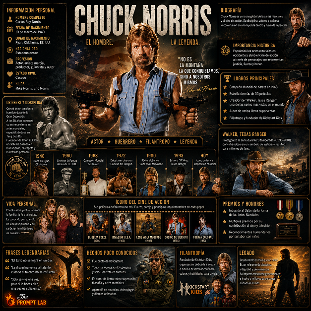

TABLEROS INFOGRAFICOS

¿Qué es?
Diseña un póster infográfico educativo en 3D con gran riqueza documental, diagramas, flechas explicativas y datos técnicos organizados elegantemente alrededor del sujeto de la foto.
¿Cómo usarlo?
- Abre Google Flow y selecciona Nano Banana 2 en proporción vertical (9:16 o 3:4).
- En Ingredients, sube la foto del personaje o figura central (+ Add Image).
- Nómbrala
Personaje 1para que la infografía se articule en torno a sus rasgos y anatomía. - Completa el nombre del sujeto y genera el tablero infográfico de calidad de museo.
Cómo personalizar / Parámetros:
Rellena [NOMBRE DE PERSONA] y [LENGUAJE DE SALIDA] en los parámetros de cabecera.
Prompt para copiar
🛠️ ¿Cómo usarlo? 1️⃣ Abrí cualquier generador de imágenes 2️⃣ Subí una foto 3️⃣ Pegá el prompt 4️⃣ Cambiá: 🔹 [NOMBRE DE PERSONA] 🔹 [LENGUAJE DE SALIDA] Y listo… 😳🔥 ------------ Crear un tablero infográfico biográfico cinematográfico ultra-premium sobre [NOMBRE DE PERSONA]. Todo el texto visible dentro de la imagen final debe estar escrito SOLO en [OUTPUT LENGUAGE]. No mezcles idiomas. No uses traducción literal. Utiliza una redacción natural, nativa y elegante en el idioma seleccionado. La IA debe investigar y recoger automáticamente información precisa sobre la persona que utiliza solamente fuentes de confianza y reconocidas mundialmente. REGLA DE LA FUENTE DE CONFIANZA: Usar fuentes fiables como: - Wikipedia - Británica - Sitios web oficiales - IMDb - Forbes - NobelPrize.org - Olympic.org - Archivos del gobierno o de la universidad - entrevistas verificadas - bases de datos históricas - grandes organizaciones de noticias Nunca inventes hechos. Si la información es incierta o no disponible, omítelo con gracia. ━━━━━━━━━━━━━━━━━━━ DIRECCIÓN CREATIVA CORE ━━━━━━━━━━━━━━━━━━━ Crea un tablero cinematográfico de grado museo diseñado como un tablero de documentales de alto presupuesto. No es una infografía básica. No es un cartel de la escuela. No un tobogán corporativo. El tablero debe sentirse como un híbrido entre: - Identidad visual documental de Netflix - Tabla de presentación de personajes de Hollywood - panel de exposición del museo - diseño editorial de revista de lujo La composición debe estar dirigida por arte, premium, emocionalmente poderosa, asimétrica pero equilibrada, y rica en narración. No hay diseños genéricos. No hay redes espaciadas uniformemente. No hay simetría por el bien de la simetría. Cada sección debe sentirse colocada intencionalmente por un director de arte de clase mundial. ━━━━━━━━━━━━━━━━━━━ INVESTIGACIÓN AUTOMÁTICA Y SISTEMA DE CONTENIDO ━━━━━━━━━━━━━━━━━━━ Investigar y resumir lo siguiente: 1. Nombre completo 2. Títulos / apodos conocidos 3. Fecha de nacimiento / defunción, si procede 4. Nacionalidad 5. Profesión / campo 6. Importancia histórica 7. Principales logros 8. Calendario de carrera 9. Mechas de la vida personal 10. Familia / relaciones cercanas 11. Premios / honores / medallas 12. Contribuciones a la sociedad 13. Influencia cultural, científica, artística, política o social 14. Frases famosas 15. Definiendo momentos de la vida 16. Legado 17. Imagen pública y personalidad 18. Desafíos, luchas o controversias si históricamente relevantes 19. Hechos menos conocidos Todo texto debe ser conciso, preciso, legible, elegante y emocionalmente atractivo. ━━━━━━━━━━━━━━━━━━━ SISTEMA DE ESTILO DE ERA ADAPTIVA ━━━━━━━━━━━━━━━━━━━ El estilo visual debe adaptarse automáticamente al período histórico, profesión y mundo cultural de la persona. Ejemplos: - Figuras históricas antiguas: pergamino viejo, piedra tallada, iluminación de archivo del museo, artefactos simbólicos - Figuras medievales: texturas manuscritas, focas reales, mapas antiguos, luz de velas dramática - Actores modernos: iluminación del estudio cinematográfico, tiras de película, atmósfera de premios, diseño editorial de lujo - Científicos: diagramas, fórmulas, planos, tonos intelectuales geniales, detalles inspirados en laboratorio - Músicos: iluminación del escenario, energía de la cubierta del álbum, instrumentos, flujo visual basado en el ritmo - Atletas: difuminado de movimiento, luces del estadio, trofeos, composiciones de acción dinámica - Líderes políticos: documentos de archivo, banderas, discursos, texturas de periódicos, contraste dramático - Emprendedores: lenguaje de diseño de productos, diagramas de innovación, tecnología moderna limpia estética La tabla no debe usar el mismo estilo para todas las personas. El lenguaje de diseño debe sentirse hecho personalizado alrededor de [NOMBRE DE PERSONA]. ━━━━━━━━━━━━━━━━━━━ MAPPING DE ARCO EMOCIONAL ━━━━━━━━━━━━━━━━━━━ No presente la biografía como información plana. Construye la historia de vida como un arco emocional cinematográfico: - Origen - Lucha temprana - Avance - Sube a la influencia - Definiendo conflicto o desafío - Pico logro - Lado humano/privado - Legado e impacto duradero El espectador debería sentir que está viendo la historia de una vida humana real, no leyendo una hoja de datos. Usa el ritmo visual para mostrar: - ambición - Vulnerabilidad - transformación - Conflicto - éxito - memoria - legado Los momentos emocionalmente importantes deberían dominar visualmente la composición. ━━━━━━━━━━━━━━━━━━━ PESAJE DE LA INFORMACIÓN DINÁMICA ━━━━━━━━━━━━━━━━━━━ No le des a cada sección igual espacio. La IA debe decidir inteligentemente qué merece el mayor énfasis visual basado en la vida de la persona. Ejemplos: - Para actores: películas, papeles icónicos, premios, imagen pública, retratos cinematográficos - Para científicos: descubrimientos, teorías, experimentos, diagramas, legado académico - Para atletas: récords, trofeos, hitos profesionales, movimiento físico, identidad del equipo - Para gobernantes o líderes: reinado, decisiones, guerras, reformas, legado, impacto histórico - Para artistas: evolución del estilo, obras maestras, vida personal, influencia cultural - Para emprendedores: inventos, empresas, productos, impacto en el mercado, estilo de liderazgo Los logros y puntos de inflexión que más definen deben convertirse en los anclajes visuales más grandes. La información secundaria debería apoyar la historia, no competir con ella. ━━━━━━━━━━━━━━━━━━━ SISTEMA DE ESTILO DE CUENTOS VISUALES ━━━━━━━━━━━━━━━━━━━ Incluye un collage cinematográfico de: - retrato principal de la persona - momentos importantes de la vida - Lo más destacado de la carrera - momentos familiares o cercanos si están disponibles - premios y honores - objetos simbólicos conectados a la persona - lugares conectados a su vida - documentos de archivo o referencias visuales - fragmentos de la línea de tiempo - imágenes legacy Si las imágenes reales no están disponibles, crea aproximaciones visuales históricamente plausibles respetuosas basadas en referencias de confianza. No cree pruebas documentales falsas engañosas. Cualquier imagen reconstruida debe sentirse artística, no falsamente archivo. ━━━━━━━━━━━━━━━━━━━ SISTEMA DE DISPOSICIÓN ━━━━━━━━━━━━━━━━━━━ Uso: - composición en capas - jerarquía visual superpuesta - enmarcado cinematográfico - equilibrio asimétrico - espacio editorial - cintas de la línea de tiempo - llamadas de anotación - tarjetas de evidencia visual - paneles de cotización - primeros planos de objetos simbólicos - notas de archivo - texturas sutiles El ojo del espectador debe viajar naturalmente a través del tablero como una historia visual. Evita: - redes aburridas - cajas de igual tamaño - colocación aleatoria de collage - texto lleno de sobrecargado - iconos infográficos genéricos - estilo cartel educativo infantil ━━━━━━━━━━━━━━━━━━━ TIPOGRAFÍA Y LENGUAJE ━━━━━━━━━━━━━━━━━━━ Todo el texto visible debe estar en [LENGUAJE DE SALIDA]. La tipografía debe sentirse premium, cinematográfica y muy legible. Uso: - poderosa jerarquía de título - etiquetas de sección corta - subtítulos elegantes - fechas concisas - cotizaciones destacadas - llamamientos de logros - declaraciones de legado Sin errores ortográficos. No hay etiquetas de lenguaje mezclado. Sin texto relleno. No hay microtexto ilegible. ━━━━━━━━━━━━━━━━━━━ DIRECCIÓN DE ARTE ━━━━━━━━━━━━━━━━━━━ Usa una paleta de colores inspirada en la era, profesión, tono emocional y legado de la persona. La iluminación debe sentirse cinematográfica e intencional. Las texturas pueden incluir: - papel de archivo - grano de película - acabado en panel de museo - fotografías viejas - metal cepillado - pergamino - impresión de periódico - miniatura suave - polvo sutil y marcas de envejecimiento La tabla final debe sentirse cara, seria y emocionalmente inmersiva. ━━━━━━━━━━━━━━━━━━━ REGLA DE LA PRESENCIA HUMANA ━━━━━━━━━━━━━━━━━━━ La persona debe sentirse viva y emocionalmente presente. Evita posar robótica. Evita la energía de las fotos en stock. Captura: - expresiones naturales - Emoción de transición - carisma - Vulnerabilidad - autoridad - humanity - imperfecciones ━━━━━━━━━━━━━━━━━━━ SALIDA FINAL ━━━━━━━━━━━━━━━━━━━ Crea un tablero infográfico cinematográfico completo. Ultra alta resolución. Concentración aguda. Detalle de grado de producción. Calidad del documental premium. Adecuado para exhibiciones de museos, documentales de YouTube, tablas de campo, narración educativa y carteles de biografía editorial de lujo. Tamaño de la imagen: (1080*1350) - Relación de aspecto 4:5 - Resolución 4K - estilo 750p Añade una pequeña marca de agua profesional al texto "The Prompt Lab" en la esquina inferior izquierda con un diseño distintivo, elegantemente dinámico con elegantes efectos de movimiento de fuego, un aspecto visual llamativo, limpio, moderno y profesional, sin líneas en blanco en cualquier parte del texto y sin fondo. La imagen final debe sentirse como: "Una biografía visual cinematográfica completa de [NOMBRE DE PERSONA]. ”